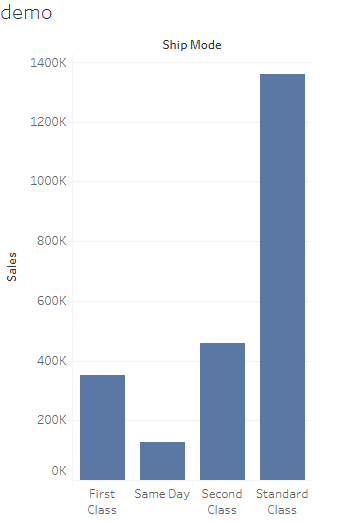

Tableau Visualization Projects and Examples
This page will include examples of Tableau visualizations we've done for class.
Lab 4.1

Q1. California, New York, and Texas had the highest number of sales, while North Dakota, West Virginia and Maine had the least number of sales, presumably due to a large/low population respectively.

Q2. Technology had the highest sales, while office supplies had the lowest. They are over 100,000 sales apart from each other

Q3. There are consistent dips in sales in February, and peaks in September and the November/December timeframe. Nov/Dec may be due to christmas gift shopping, and Sept might be for back to school. The dip in February might just be less spending from people in general after the holiday season.

Q4. Tables had a high number of sales but negative profit, while paper and copiers had a lower number of sales but higher profit. It may be because tables were unable to be sold for much more than it cost to produce them, while paper, copiers, and ink have a tendency to get costly, but copiers aren't something that need to be sold multiple times to one person/businesses, hence the lower sales count.
Q5. The standard shipping mode was used for the most amount of sales, because recently people have been more willing to pay lower shipping costs for a longer wait, while same day had the lowest amount of sales, most likely due to a prohibitive shipping cost and the fact that if someone needed something same day, they would probably go get it at a store if possible. Shipping departments could use this information to factor in shipping costs to profit.